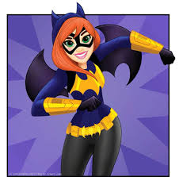

Fantasía
POISON IVY
Manipulación de las plantas, control mental, intuición química, valor científico y tacto tóxico.
BATGIRL
Genio en computación, experta en artes marciales, memoria fotográfica, habilidades legendarias de investigación.
HARLEY QUINN
Experta gimnasta, acróbata, superingeniosa.

Deportes

ENRIQUETA BASILIO
La atleta mexicana es la primera mujer en encender un pebetero olímpico. Enriqueta Basilio, con sólo 20 años de edad, subió a lo más alto del Estadio Olímpico de Ciudad Universitaria para encender el fuego de México 68.

SERENA WILLIAMS
Considerada como una de las mejores tenistas de la historia, Serena Williams ostenta el nada despreciable palmarés de 39 títulos de Grand Slam. Ha conseguido 23 de ellos en modalidad individual, 14 en dobles femeninos (junto a su hermana Venus) y 2 en dobles mixtos. Su gran fuerza física y mental ha sido clave en una carrera deportiva de ensueño, que no se lo ha puesto fácil a la hora de hacerle elegir entre su vida personal y deportiva. En 2017 renunció al tenis para poder tener un hijo, reincorporándose posteriormente a la actividad deportiva. "UNA CAMPEONA NO LO ES POR SUS VICTORIAS, SINO POR CÓMO DE RÁPIDO SE RECUPERA DE SUS DERROTAS".
Otros
MALALA YOUSAFZAI
Malala Es una activista a favor de los derechos civiles, especialmente los de las mujeres en el valle del río Swat, en Pakistán, donde el régimen talibán tiene prohibido la asistencia a la escuela de las niñas. Sus ideales le llevaron a recibir un disparo en la cabeza cuando regresaba en autobús de la escuela a su casa en la ciudad de Mingora. Lejos de echarse atrás, la joven extendió su lucha a nivel mundial. Su labor le llevó a ser premiada con el Nobel de la Paz en 2014. Con tan sólo diecisiete años se convertía en la persona más joven a acceder a ese galardón.
MARIE CURIE
No hay científica en la historia que haya superado en reconocimiento y fama a Marie Curie, la descubridora del Polonio y el Radio como elementos químicos. Pasó hambre y frío, y arriesgó su salud con tal de no renunciar a su pasión investigadora. Y pudiendo hacerse rica con sus descubrimientos, se negó a patentar el proceso de aislamiento del radio dejándolo a disposición de la comunidad científica. Con todo, puede decirse que cumplió su sueño: fue la primera mujer que llegó a catedrática en la Universidad de París y la primera en ganar el Nobel, compartido con su marido Pierre Curie, por sus investigaciones sobre los elementos radiactivos.